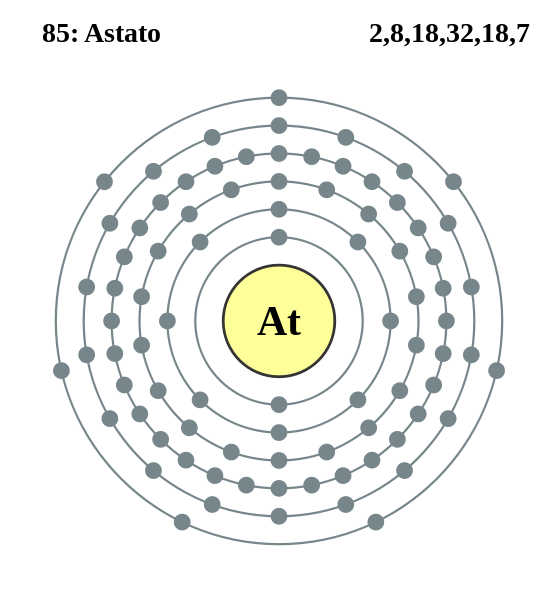

|
|
||
|
ASTATINA La astatina se sintetizó por primera vez en 1940, es muy radioactiva y existe por la desintegración de la radioactividad de otros elementos. Las propiedades de la astatina son únicamente estimaciones. Puede tener una apariencia oscura, ser un semiconductor o un metal. Es más metálica que el yodo, aunque sus compuestos son similares a los compuestos de este, y es probable que se acumule en la glándula tiroidea. El elemento no existe en forma pura; se evaporaría de manera inmediata por el calor de su propia radioactividad. Los cuatro isótopos de astatina que se producen naturalmente tienen una vida corta. El isótopo más estable y la forma médica útil se producen sintéticamente. |
 |
DATOS Número Atómico: 85 Peso Atómico: 210 Electronegatividad: 2,2 Configuración Electrónica: [Xe]4f145d106s26p5 Estados de Oxidación: - No. de Electrones de Valencia: 7 |